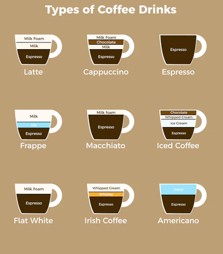

2. User Guide
2.1. All about coffees
Implementation of design patterns will be based on the coffee related examples. Picture below shows different types of coffees that could be prepared in one or another pattern.
2.2. Command Line interface
2.2.1. run-creational-pattern
Run creational patterns.
run-creational-pattern [OPTIONS] COMMAND [ARGS]...
2.2.1.1. abstract-factory
Run abstract factory example.
This function calls abstract factory module to run an example of creational design pattern called abstract factory.
run-creational-pattern abstract-factory [OPTIONS]
2.2.1.2. builder
Run builder example.
This function calls builder module to run an example of creational design pattern called builder.
run-creational-pattern builder [OPTIONS]
2.2.1.3. factory-method
Run factory method example.
This function calls factory method module to run an example of creational design pattern called factory method.
run-creational-pattern factory-method [OPTIONS]
2.2.1.4. prototype
Run prototype example.
This function calls prototype module to run an example of creational design pattern called prototype.
run-creational-pattern prototype [OPTIONS]
2.2.1.5. singleton
Run singleton example.
This function calls singleton module to run an example of creational design pattern called singleton.
run-creational-pattern singleton [OPTIONS]
2.2.2. run-structural-pattern
Run structural patterns.
run-structural-pattern [OPTIONS] COMMAND [ARGS]...
2.2.2.1. adapter
Run adapter example.
This function calls adapter module to run an example of structural design pattern called adapter.
run-structural-pattern adapter [OPTIONS]
2.2.2.2. facade
Run facade example.
This function calls facade module to run an example of structural design pattern called facade.
run-structural-pattern facade [OPTIONS]
2.2.3. run-behavioral-pattern
Run behavioral patterns.
run-behavioral-pattern [OPTIONS] COMMAND [ARGS]...
2.2.3.1. command
Run command example.
This function calls command module to run an example of behavioral design pattern called command.
run-behavioral-pattern command [OPTIONS]
2.2.3.2. mediator
Run mediator example.
This function calls mediator module to run an example of behavioral design pattern called mediator.
run-behavioral-pattern mediator [OPTIONS]
2.2.3.3. observer
Run observer example.
This function calls observer module to run an example of behavioral design pattern called observer.
run-behavioral-pattern observer [OPTIONS]
2.2.3.4. strategy
Run strategy example.
This function calls strategy module to run an example of behavioral design pattern called strategy.
run-behavioral-pattern strategy [OPTIONS]
2.2.3.5. template-method
Run template method example.
This function calls template_method module to run an example of behavioral design pattern called template method.
run-behavioral-pattern template-method [OPTIONS]